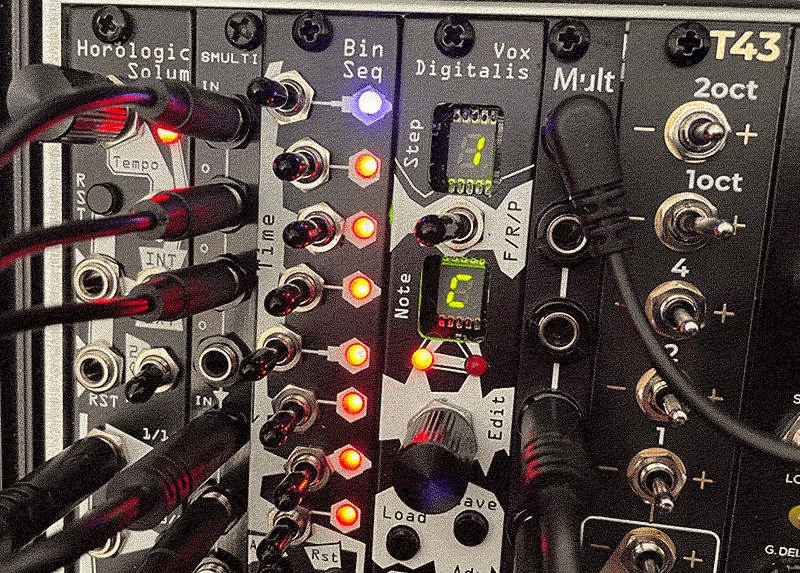

How I Sequence My Live Case
24/05/2022

I’ve been through a few sequencers since I started with modular as there's so many out there and it took a while to figure out what my wants and needs were.
At first I wanted to compose whole tracks with multiple parts and sections. I started with a Beatstep Pro which was good as you can save parts and chain them to an extent but you still have the flexibility to mix things up. I used this for a year or so and was still thinking in terms of sequencing full tracks and it got tedious shifting through patterns & pages.
I then upgraded to a Nerdseq, because i’m used to trackers (LSDj on Game Boy, Renoise on PC/Mac) and it’s perfect for making structures as complex as you want. You can loop and trigger individual patterns live so it does have improvisational capabilities too. I'd still highly recommend it if you like trackers and want to create intricate compositions and be able to easily save a whole set.
After maybe a year of that, I felt I was under-utilising the Nerdseq and I went in the opposite direction with the 5-step RYO Penta, then Serpens Modular Ara came out which is also a 5-step sequencer (among other things) and I’ve still got and use both. Neither are quantized, which I liked the freedom of, but on the odd occasion where I wanted something to sound in-tune, it's pretty hard to dial in particular notes.
By this stage, I worked out what features I really wanted- something small, with the ability to save a few melodies/basslines to give me the option of more "musical" parts when I feel like it. There's a few options out there for this like the 2HP Seq and the Erica Synths Pico Seq and most seem to have similar features. I went with the Noise Engineering one as it seemed compact but with a nice enough workflow. Along with a couple of other modules, this has evolved into a little sequencing section that I've been happy with for a while now as it gives a bit of flexibility but requires a bit of creativity and problem solving to get the most out of them which is half of the fun of modular for me.
MODULES
- Horologic Solum - clock + divider
- Bin Seq - 8-step gate/trigger sequencer
- Vox Digitalis - 16-step pitch sequencer
- VPME T43 - precision adder
- A couple of multiples for multing the clock, reset signal and gate/trigger signal.
HOW THEY'RE PATCHED
This combination allows for 3 main variations:- Trigger sequencer into pitch sequencer; clock into envelope.
- Trigger sequencer into both pitch sequencer and envelope.
- Trigger sequencer into envelope; clock into pitch sequencer.
The different variations allow me to change whether the notes change in-time with or independently of the rhythm.
Horologic Solum sends Bin Seq and Vox Digitalis a reset every 16 steps regardless of the variations mentioned above, to keep things at the same loop length even if I change the rhythm with Bin Seq.
Switching between them is mostly just changing one or two cables, especially with mults nearby. See the video below for examples of each variation.
As the clock has a built-in divider, if the pitch sequencer is running at a slower clock division than the trigger sequencer or envelope, then I can have something more like a chord progression instead of a melody. You just have to remember to also set the reset signal to a slower division too.
Horologic Solum is great because you can hold reset then switch the clock to external to pause the sequence, then when you switch it back to internal, it’ll start again from the first step of the sequence. This is really handy when performing live as you can run a sequence for a while, pause it and have something else going on (drone, ambience, noise), while setting the next part up (like loading a different sequence, or changing the rhythm).
I've set the Vox Digitalis to only load new patterns once it reaches the end of its current sequence, so I can change it early and not have to press the load button at exactly the right moment.
The T43 is a recent addition. I wanted a precision adder after watching this awesome video using the AJH Synth one and had 4HP spare. I can use it to transpose my sequencer or transpose drones if the sequencer isn’t running. It has switches to go up or down 2 octaves, 1 octave, 4 semitones, 2 semitones, 1 semitones, so depending on which switches you combine you can switch to any note up to 43 semitones up or down.
I work out a sequence either in my head or on the Keystep before programming it in as I find I come up with better sequences this way. It holds up to 16 sequences which i’ve found to be more than enough, I’m not precious about them and just overwrite them if they don't still sound good after looping them repeatedly. The button combos on the Vox Digitalis are pretty straightforward and intuitive, especially for loading/saving sequences and I really like the little calculator-style display- it’s satisfying to watch without being distracting or feeling like you’re looking at a screen. It has a switch for changing the direction of the sequence between forward/random/ping pong which i’ve not really found a use for yet, I guess it’s more handy for techno or something where you want a bit more variation.
I've been using this set-up for a while now and am enjoying with the workflow. Having the trigger sequence separated from the pitch sequence adds flexibility, feels more hands on and allows for experimentation, finding creative ways around the limitations.
Honourable mentions:
- Fractio Solum - Really fun divider where you can basically dial in loads of different time signatures. It was part of the squad previously but I don’t really have enough things to trigger to make it useful in the live case. I’ve moved it into the Doepfer LC9 along with some drum percussion modules where I can get more out of it.
- Keystep - Simple, doesn't take up much room- I really like the boxy utilitarian shape. Haven't used it live at all, I mainly use it for working out sequences. Only annoying things about the Keystep are: you can have modulation by the touch strip, aftertouch or velocity but can't have them all at the same time AND you need to use the software to switch between them; also the tiny switches on the back for changing between internal and external clock are kinda annoying. Despite this though I think it's still pretty great (especially in black).
Hopefully the above is helpful or mildly interesting to someone out there! I'd love to hear about other peoples' experiences with sequencing- particularly outside of the big fully-featured sequencers.